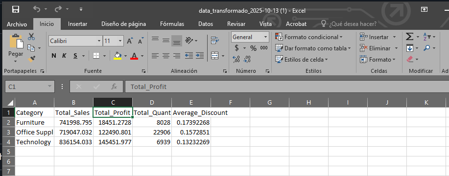
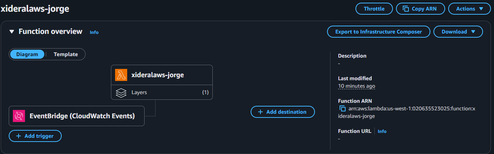
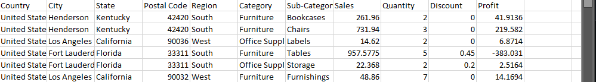

Código Python
import json
import boto3
import pandas as pd
import io
from datetime import datetime
# Cliente de S3
s3 = boto3.client("s3")
# Función de transformación
def transformar_datos(df):
# Eliminamos filas vacías en columnas clave
df = df.dropna(subset=["Category", "Sales", "Profit", "Quantity", "Discount"])
# Agrupamos por categoría y resumimos métricas
resumen = df.groupby("Category", as_index=False).agg({
"Sales": "sum",
"Profit": "sum",
"Quantity": "sum",
"Discount": "mean"
})
# Renombramos columnas
resumen.rename(columns={
"Sales": "Total_Sales",
"Profit": "Total_Profit",
"Quantity": "Total_Quantity",
"Discount": "Average_Discount"
}, inplace=True)
return resumen
def lambda_handler(event, context):
# Configuración del bucket y archivo fuente
bucket = "xideralaws-curso-jorge"
key = "Sample.csv"
# Nombre del archivo de salida con fecha actual
fecha_actual = datetime.now().strftime("%Y-%m-%d")
output_key = f"data_transformado_{fecha_actual}.csv"
try:
# Leer archivo original desde S3
obj = s3.get_object(Bucket=bucket, Key=key)
body = obj["Body"].read()
df = pd.read_csv(io.BytesIO(body))
# Aplicar transformación
df_transformado = transformar_datos(df)
# Guardar archivo transformado en memoria
buffer = io.StringIO()
df_transformado.to_csv(buffer, index=False)
# Subir el nuevo archivo a S3
s3.put_object(Bucket=bucket, Key=output_key, Body=buffer.getvalue())
# Retornar respuesta y vista previa
head_response = df_transformado.head(5).to_dict(orient="records")
return {
"statusCode": 200,
"body": f"Archivo transformado guardado en s3://{bucket}/{output_key}",
"preview": head_response
}
except Exception as e:
return {
"status": "error",
"message": str(e)
}
Ver código completo en GitHub
Captura de la data transformada

Captura del Trigger

Captura de los datos crudos
